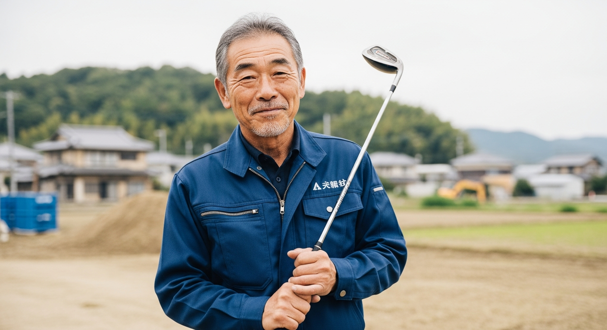
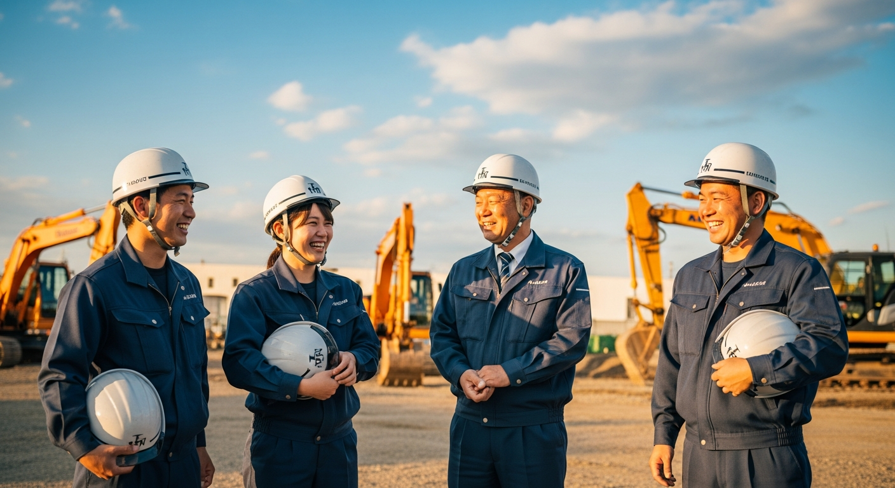
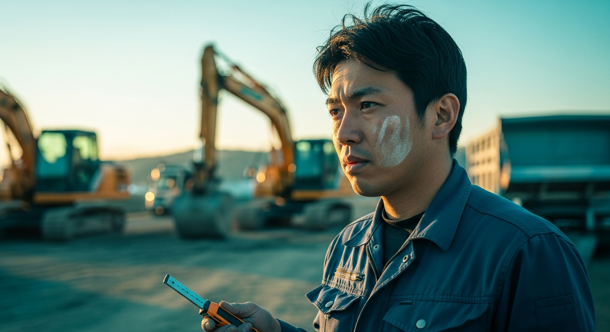
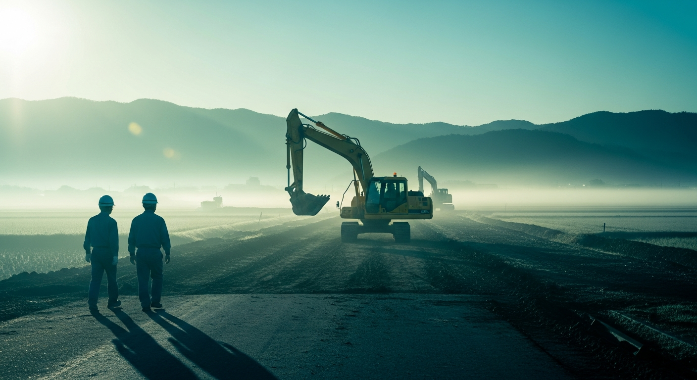
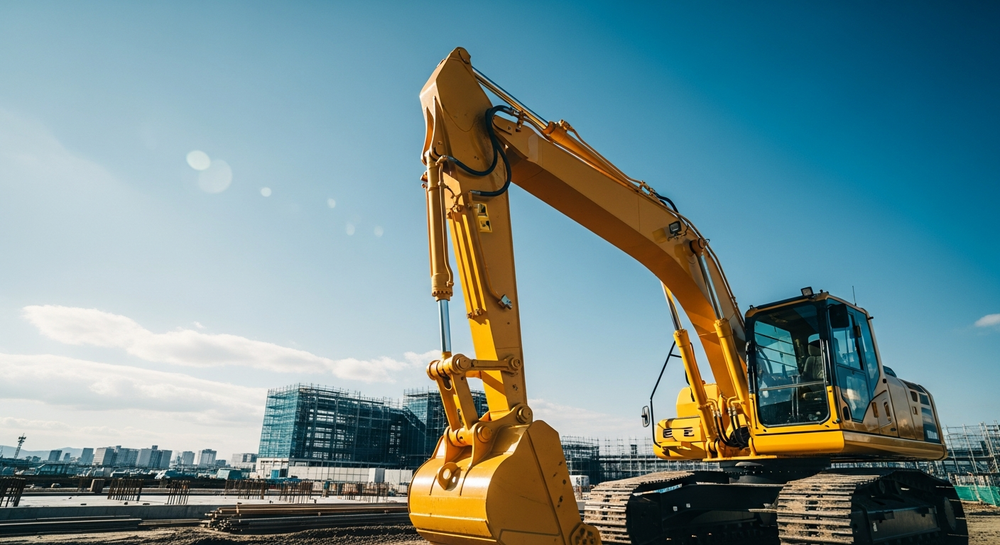

有限会社良邊建設 様（良邊 則光 代表）
本資料は、ヒアリング時にいただいたご要望をもとに 株式会社ランバードから提案する3つの方向性です。5/14のディレクションで、どの方向性で進めるかを一緒に決めさせてください。
5/14にいただいた建設写真19枚と、世界観を揃えたAI生成3枚（職人の手元・横顔・チーム）を組み合わせ、26秒のプレビュー動画を制作しました。「現場のリアル × かっこよさ × 信頼感」のトーンで仕上げています。





良邊様の「稼げそう・楽しそう」というご要望、そして代表 良邊様ご自身の "キャラ立ち" を最大限活かすなら、パターンA（レッツドボクサイズ路線）が本命です。